第 10 章 沸腾与凝结#
本章解决：相变对流是换热系数最高的一族传热过程——沸腾与凝结靠吸收、释放潜热搬运能量，流体温度几乎不变，小温差就能传走大热流，换热系数比无相变对流高出 1～2 个数量级。本章沿沸腾曲线把沸腾分成自然对流、核态、过渡、膜态四个区段，讲清临界热流密度为什么是工程设计红线，再给出 Rohsenow、Zuber 等关联式定量计算池内沸腾，以及管内流动沸腾的流型与关联式。凝结侧从 Nusselt 1916 的层流液膜解析解出发，逐条假定推导液膜厚度、当地与平均换热系数，扩展到湍流液膜、水平管、管束与肋管，最后说明珠状凝结为什么能高出一个量级。全章与第 9 章共享"浮升力驱动流动"的图像，但新增潜热 \(h_{fg}\) 与表面张力 \(\sigma\) 两个关键角色。
10.0 本章导图#
10.1 沸腾与凝结的无量纲参数#
本章处理伴随相变（phase change）的对流过程：沸腾发生在固–液界面，热量从固体表面传给液体，把液体变成蒸气；凝结正好反过来，蒸气变回液体、把潜热交给固体表面。
它们在分类上属于对流（有流体运动），但有两个独特之处：
- 存在相变，传热不改变流体温度——热量全部进了潜热。于是沸腾、凝结可以用很小的温差实现很大的传热速率。
- 多了两个主角：除了潜热 \(h_{fg}\)，还有液–汽界面上的表面张力（surface tension）\(\sigma\)，以及两相密度差诱发的浮升力（buoyancy force）——后者正比于 \(g(\rho_l - \rho_v)\)。
潜热与浮升力驱动的流动叠加起来，使沸腾、凝结的换热系数与传热速率远大于无相变对流。
工程背景遍地都是：闭式动力循环里，锅炉把高压液体变成蒸气，汽轮机膨胀后的蒸气在冷凝器里还原成液态，泵再送回锅炉；蒸气压缩制冷循环的蒸发器与冷凝器也是一对沸腾/凝结部件；沸腾的高换热系数还让它成为先进电子设备热管理的候选方案。设计这些部件的前提，是把相变换热过程吃透。
第 6 章处理边界层时，我们靠无量纲化控制方程找无量纲群。沸腾与凝结的控制方程太难建立，于是改用白金汉 π 定理（Buckingham pi theorem）。对这两种过程，换热系数可能依赖：表面与饱和温度之差 \(\Delta T \equiv T_s - T_{sat}\)、密度差体力 \(g(\rho_l - \rho_v)\)、潜热 \(h_{fg}\)、表面张力 \(\sigma\)、特征长度 \(L\)，以及液体或蒸气的热物性 \(\rho, c_p, k, \mu\)：
10 个变量、5 个量纲（m, kg, s, J, K），得 \(10 - 5 = 5\) 个 π 组，写成：
或用熟悉的记号：
\(Nu\)、\(Pr\) 是单相对流里的老朋友，新的三个：
- 雅各布数（Jakob number）\(Ja\)：液体（凝结时是蒸气）在相变中吸收的最大显热与潜热之比。多数应用里显热远小于潜热，\(Ja\) 数值很小；
- 邦德数（Bond number）\(Bo\)：浮升力与表面张力之比；
- 那个无名参数 \(\rho g(\rho_l - \rho_v)L^3/\mu^2\) 长得很像格拉晓夫数（回忆式 9.12 中 \(\beta \Delta T \sim \Delta\rho/\rho\)）：它代表浮升力诱发的流动对传热的影响。
后续各节会反复看到这些参数出场。
拓展：Ja 很小意味着什么
取 \(c_{p,l} = 4.2\ \mathrm{kJ/(kg \cdot K)}\)、\(h_{fg} = 2257\ \mathrm{kJ/kg}\) 的水：即使过热度/过冷度达 50 K，\(Ja\) 也只有 0.093。这就是说显热项通常只占潜热的零头——这正是为什么凝结、沸腾计算中常用 \(h_{fg}\) 直接把热流量换算成相变质量流量，而把显热当作一阶修正（10.7 节的 Rohsenow 修正潜热 \(h'_{fg}\) 就是干这个的）。
10.2 沸腾模式#
蒸发发生在固–液界面上就叫沸腾（boiling）。发生条件：表面温度 \(T_s\) 超过液体压强对应的饱和温度 \(T_{sat}\)。热从固体表面传给液体，牛顿冷却公式取如下形式：
其中 \(\Delta T_e \equiv T_s - T_{sat}\) 叫过热度（excess temperature），也有教材译作"壁面过热度"。
过程的标志性现象是蒸气泡：气泡在表面生成、长大、随后脱离。气泡的生长与动力学复杂地依赖于过热度、表面性质和流体物性（如表面张力）；反过来，气泡的生成动力学又影响近壁液体运动，从而强烈影响换热系数 \(h\)。
按外部条件，沸腾分几类：
- 池内沸腾（pool boiling，又称大容器沸腾）：液体大体积静止不动，近壁流动只来自自然对流和气泡生长、脱离诱发的搅拌；
- 强迫对流沸腾（forced convection boiling）：流体运动由外部手段（泵、压差）驱动，叠加自然对流与气泡搅拌；
- 过冷沸腾（subcooled boiling）：液体大部分温度低于饱和温度，壁面生成的气泡进入液体主体后可能重新凝结；
- 饱和沸腾（saturated boiling）：液体温度略超饱和温度，壁面生成的气泡被浮升力推着穿过液体，最终从自由表面逃逸。
10.3 池内沸腾#
饱和池内沸腾（图 10.1）被研究得最透：液体温度在紧贴表面的薄层内急剧上升，其余大部分液体只比饱和温度略高。液–固界面上生成的气泡上浮到液–汽界面，蒸气最终穿过界面输送出去。理解物理机制的钥匙是沸腾曲线。
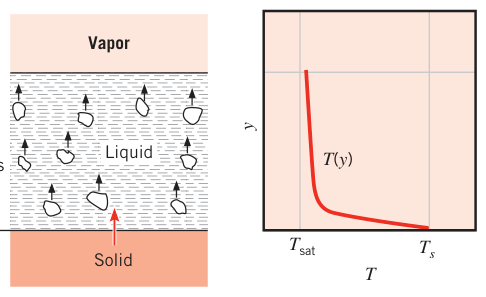
10.3.1 沸腾曲线#
Nukiyama（1934）第一个识别出池内沸腾的不同区段，装置见图 10.2：一条水平镍铬丝浸在饱和水中，测电流 \(I\) 与电压降 \(E\) 得热流密度，再由电阻随温度的变化定出丝温。这种安排叫功率控制加热（power-controlled heating）：丝温 \(T_s\)（即 \(\Delta T_e\)）是因变量，功率设定（即 \(q_s''\)）是自变量。沿图 10.3 的加热曲线看：功率一加，热流先慢后快地随过热度上升。
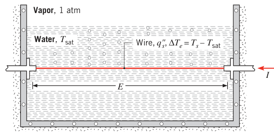
Nukiyama 观察到：直到 \(\Delta T_e \approx 5^\circ\mathrm{C}\) 才出现气泡（沸腾起始）；继续加功率，热流冲到很高的值；\(q_s''\) 稍超过 \(q_{\max}''\) 时，丝温突然跳到熔点——烧断（burnout）。但他换用熔点更高的铂丝（2045 K 对 1500 K）后，得以在 \(q_s'' > q_{\max}''\) 下继续运行；再降低功率时，\(\Delta T_e\) 随 \(q_s''\) 沿图 10.3 的冷却曲线变化：热流降到最低点 \(q_{\min}''\) 后，再减功率，过热度突然掉下来，过程沿原加热曲线回到饱和点。
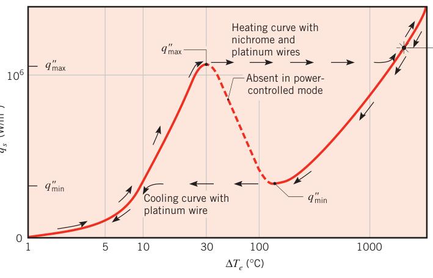
Nukiyama 认为图 10.3 的滞回（hysteresis）是功率控制加热的产物——\(\Delta T_e\) 沦为因变量；他猜想若能独立控制 \(\Delta T_e\)，就能补上曲线中缺失（虚线）的一段。这一猜想后来被 Drew 和 Mueller 证实：在管内凝结不同压强的蒸气以控制壁温，管外低沸点有机流体沸腾，缺段补齐。
拓展：莱顿弗罗斯特现象的日常体验
把水滴滴在温度远超沸点的锅面上（约 200°C 以上），水滴不马上蒸干，而是缩成珠在面上滚动、缓慢缩小——蒸气膜把液滴托了起来。这就是莱顿弗罗斯特现象（Leidenfrost effect，1756 年观测记载），对应沸腾曲线最低点附近的物理：表面完全被蒸气膜覆盖，液体与固体几乎不接触。厨师"泼水测温"判断锅温，用的就是这个效应。
10.3.2 池内沸腾的各区段#
各区段标在图 10.4 的沸腾曲线上（水、1 atm；其他流体趋势类似）。由式 10.3，\(q_s''\) 同时取决于 \(h\) 与 \(\Delta T_e\)，各区段按 \(\Delta T_e\) 划分。
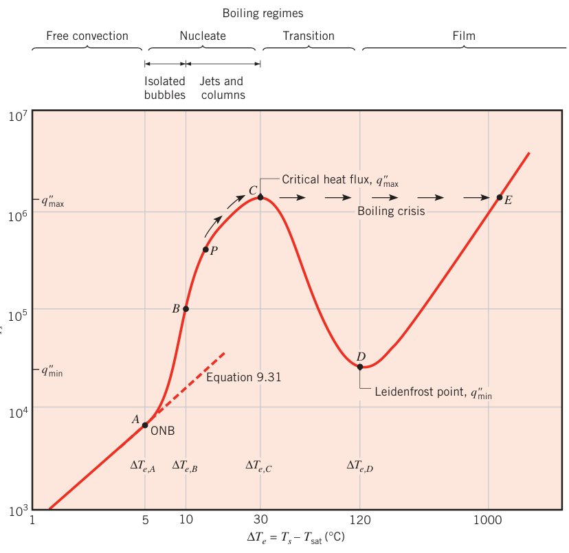
自然对流沸腾（free convection boiling）：\(\Delta T_e \le \Delta T_{e,A} \approx 5^\circ\mathrm{C}\)。表面温度必须略超饱和温度才能维持气泡生成；过热度渐增，气泡终会萌发，但在 A 点（核态沸腾起始点，onset of nucleate boiling，ONB）之前，流动由自然对流主导。层流时 \(h \propto \Delta T_e^{1/4}\)、湍流时 \(h \propto \Delta T_e^{1/3}\)，对应 \(q_s'' \propto \Delta T_e^{5/4}\) 或 \(\Delta T_e^{4/3}\)。大水平平板的流动是湍流，这一段沸腾曲线可用式 9.31 预测（图 10.4 中已画出）。
核态沸腾（nucleate boiling）：\(\Delta T_{e,A} < \Delta T_e \le \Delta T_{e,C} \approx 30^\circ\mathrm{C}\)，内含两种流态：
- A–B 段（孤立气泡区）：气泡在离散的汽化核心处生成并脱离表面（即图 10.2 的情形）。气泡脱离搅动近壁液体，\(h\) 与 \(q_s''\) 大增。这一段的热量绝大部分直接从表面传给运动着的液体，而不是靠升离表面的气泡携带；
- B–C 段（气泡柱与射流区）：\(\Delta T_e\) 超过 \(\Delta T_{e,B}\) 后更多汽化核心激活，气泡密集到互相干扰、合并，蒸气以射流或气柱形式逃逸，随后合并成汽块（图 10.5a）。密集气泡妨碍近壁液体运动。
图 10.4 的 P 点是沸腾曲线行为转变点：P 之前曲线在双对数坐标上近似直线，即 \(q_s'' \propto \Delta T_e^n\)；过了 P 点热流随 \(\Delta T_e\) 的增长变慢，\(h = q_s''/\Delta T_e\) 在 P 与 C 之间某处开始下降。热流最大值 \(q_{s,C}'' = q_{\max}''\) 通常称为临界热流密度（critical heat flux，CHF），常压下的水超过 \(1\ \mathrm{MW/m^2}\)。最大点处蒸气大量生成，液体越来越难持续润湿表面。
核态段用很小的过热度就拿到很高的热流与换热系数（\(h > 10^4\ \mathrm{W/(m^2 \cdot K)}\)，远超无相变对流的典型值），所以多数工程设备都把运行点选在核态沸腾区。
拓展：为什么核态沸腾的 h 这么高
三个机制叠加：气泡脱离时把过热液体从壁面"抽走"、让冷空气般的过冷液体回填（强烈的微观对流）；气泡底部微液膜蒸发直接消耗潜热；近壁温度梯度被反复重建，热边界层薄到毫米级。这也是后面 Rohsenow 关联式把沸腾类比成"气泡诱导的强迫对流"的物理依据。
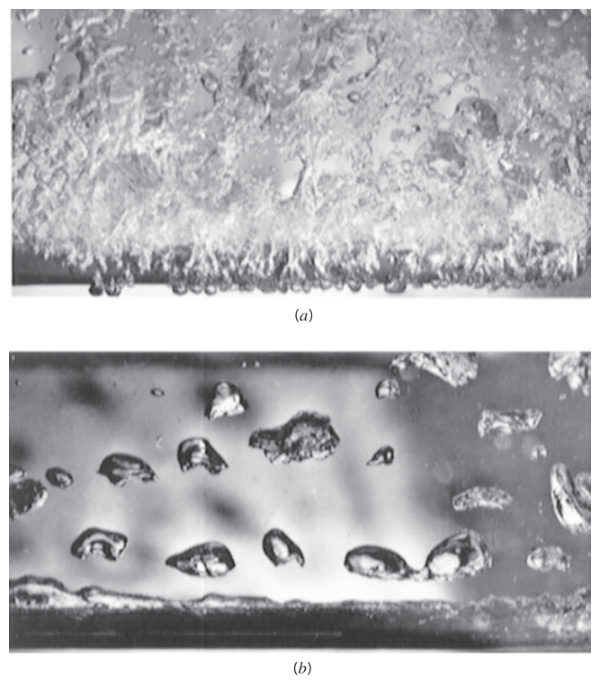
过渡沸腾（transition boiling）：\(\Delta T_{e,C} < \Delta T_e < \Delta T_{e,D} \approx 120^\circ\mathrm{C}\)，又称不稳定膜态沸腾（unstable film boiling）或部分膜态沸腾（partial film boiling）。气泡生成快到开始在地表结成蒸气膜/蒸气毯；表面上任意一点都可能在与膜态之间振荡，但蒸膜覆盖的面积份额随 \(\Delta T_e\) 增大。蒸气导热系数远小于液体，\(h\)（连同 \(q_s''\)）必然随 \(\Delta T_e\) 增大而下降。
膜态沸腾（film boiling）：\(\Delta T_e \ge \Delta T_{e,D}\)。D 点叫莱顿弗罗斯特点（Leidenfrost point），热流取最小值 \(q_{s,D}'' = q_{\min}''\)，表面被蒸气毯完全覆盖，热从表面穿过蒸气膜以导热 + 辐射方式传给液体。表面温度继续升高时，穿过蒸膜的辐射越来越显著，\(q_s''\) 重新随 \(\Delta T_e\) 上升。图 10.5b 展示了膜态沸腾的蒸气形态与气泡动力学（甲醇在水平管上沸腾的照片）。
回到功率控制的视角——核反应堆、电阻加热器等大量应用控制的是 \(q_s''\) 而不是 \(T_s\)。从图 10.4 的 P 点出发逐渐加大 \(q_s''\)：\(\Delta T_e\)（进而 \(T_s\)）沿曲线升到 C 点；\(q_s''\) 一旦越过 C，\(\Delta T_e\) 从 \(\Delta T_{e,C}\) 陡跳到 \(\Delta T_{e,E}\)（\(T_{s,E}\) 可能超过固体熔点）——系统失效。所以 C 点又叫烧毁点（burnout point）或沸腾危机（boiling crisis），准确掌握 CHF 至关重要：我们可以把运行点贴近 CHF，但绝不越过它。
拓展：沸腾危机的工程后果
CHF 事故不是"效率变差"，而是"壁温失控"：\(q_s''\) 越过临界值后表面被蒸膜罩住，\(h\) 骤降一个量级以上，按式 10.3 壁温必须飙升来维持同样的热流——燃料棒熔化（核反应堆）、电热管烧断都是这条路径。因此沸腾回路的设计准则不是"不超过多少温度"，而是"热流对 CHF 留出足够裕度"。
10.4 池内沸腾关联式#
沸腾曲线形状各异、各区段物理机制不同，自然衍生出大量关联式。\(\Delta T_{e,A}\) 以下（图 10.4 自然对流段）直接用第 9 章的自然对流关联式即可。本节覆盖核态沸腾与膜态沸腾的常用关联式。
10.4.1 核态池内沸腾#
核态沸腾分析需要预测表面汽化核心（nucleation site）数量与每个核心上气泡的生成速率。这一区段虽被广泛研究，完整可靠的理论模型至今没有。Yamagata 等人最早指出汽化核心对热流的影响，并证明 \(q_s''\) 近似正比于 \(\Delta T_e^3\)——好的关联式应体现这一关系。
10.3.2 节说过，A–B 段的大部分热量直接从受热表面传给液体，可以把核态沸腾看成一种液相强迫对流——"泵"是上升的气泡。强迫对流关联式的一般形式是
只要给 \(Nu\)、\(Re\) 找到长度尺度与特征速度，就能借式 7.1 关联池内沸腾数据。因为假设气泡搅拌液体，对较大的加热面，合适的长度尺度是气泡直径 \(D_b\)。气泡脱离表面时的直径由力平衡决定：浮升力（促成脱离，正比于 \(D_b^3\)）对表面张力（把气泡按在表面，正比于 \(D_b\)），得
比例常数取决于液体、蒸气与固体表面之间的接触角（contact angle），而接触角由具体的液体–表面组合决定。下标 \(l\)、\(v\) 分别指饱和液体与饱和蒸气状态，\(\sigma\)（N/m）是表面张力。
液体搅拌的特征速度：液体回填脱离气泡留下的空位（距离正比于 \(D_b\)）所用的时间，除以相邻两次气泡脱离的时间间隔 \(t_b\)。而 \(t_b\) 等于"形成一个气泡所需的能量"（正比于 \(\rho_l h_{fg} D_b^3\)）除以"固–汽接触面积上的供热速率"（正比于 \(q_s'' D_b^2\)）：
把式 10.4a、10.4b 代入式 7.1，把比例系数吸收进 \(C_{fc}\)，再代入式 10.3（式 7.1 的指数 \(m_{fc}\) 实验值为 ⅔），得到
这就是 Rohsenow 关联式——第一个、也是使用最广的核态沸腾关联式。除 \(\rho_v\) 外所有物性取液体，且全部按 \(T_{sat}\) 取值。系数 \(C_{s,f}\) 与指数 \(n\) 取决于表面–流体组合，代表值见表 10.1（其他组合查文献）。
表 10.1 不同表面–流体组合的 \(C_{s,f}\) 与 \(n\) 值
| 表面–流体组合 | 表面处理 | \(C_{s,f}\) | \(n\) |
|---|---|---|---|
| 水–铜 | 划痕（scored） | 0.0068 | 1.0 |
| 水–铜 | 抛光（polished） | 0.0128 | 1.0 |
| 水–不锈钢 | 化学刻蚀 | 0.0133 | 1.0 |
| 水–不锈钢 | 机械抛光 | 0.0132 | 1.0 |
| 水–不锈钢 | 研磨抛光 | 0.0080 | 1.0 |
| 水–黄铜 | — | 0.0060 | 1.0 |
| 水–镍 | — | 0.006 | 1.0 |
| 水–铂 | — | 0.0130 | 1.0 |
| 正戊烷–铜 | 抛光 | 0.0154 | 1.7 |
| 正戊烷–铜 | 研磨（lapped） | 0.0049 | 1.7 |
| 苯–铬 | — | 0.0101 | 1.7 |
| 乙醇–铬 | — | 0.0027 | 1.7 |
水的表面张力与汽化潜热查表 A.6，选定流体查表 A.5。水的 \(\sigma\) 随温度升高显著下降（\(\sigma = 58.9 \times 10^{-3}\ \mathrm{N/m}\) 在 100°C）。
几点使用须知：
- Rohsenow 关联式只适用于清洁表面；用于估算热流时误差可达 ±100%。好在 \(\Delta T_e \propto (q_s'')^{1/3}\)——反过来由 \(q_s''\) 估 \(\Delta T_e\) 时误差缩为三分之一；
- 由于 \(q_s'' \propto h_{fg}^{-2}\)（式 10.5 中 \(h_{fg}\) 在括号外出现一次、在括号内以三次方出现在分母，合计 \(-2\) 次幂），而 \(h_{fg}\) 随饱和压强（温度）升高而减小，加压会提高核态沸腾热流；
- 若把式 10.5 改写成以任意长度 \(L\) 为基准的 \(Nu_L\)，形式为 \(Nu_L \propto Ja^2 Pr^{1-3n} Bo^{1/2}\)——与式 10.2b 对比，只差那一个无名参数；若以气泡直径为基准，则简化为 \(Nu_{D_b} \propto Ja^2 Pr^{1-3n}\)。
拓展：C_sf 为什么随表面–流体组合而变
\(C_{s,f}\) 吸收了接触角与成核位点分布的影响：水对抛光铜接触角大、气泡难脱离，\(C_{s,f} = 0.0128\)；同一块铜划出划痕后凹坑截留蒸气、成核容易，\(C_{s,f}\) 降到 0.0068——同一种"水–铜"，\(C_{s,f}\) 相差近一倍。所以用 Rohsenow 式时，第一件事是核对表面材质与处理状态是否与表中一致，表面老化、结垢后数值还会漂移。
【例 10.1】铜锅烧水的功率、蒸发速率与临界热流密度
已知（Known）：直径 0.3 m 的铜锅锅底由电加热器维持在 118°C。
求（Find）：1. 烧水所需电功率；2. 沸腾引起的蒸发速率；3. 临界热流密度。
示意图（Schematic）：
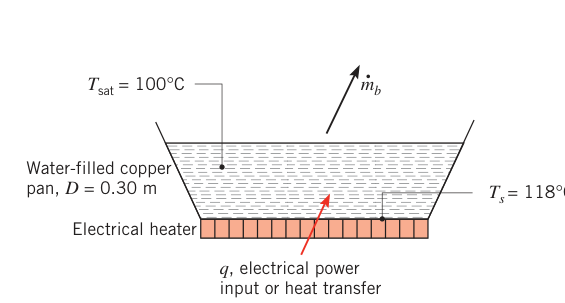
假设（Assumptions）：1. 稳态条件；2. 水处于标准大气压 1.01 bar；3. 水温均匀，为 \(T_{sat} = 100^\circ\mathrm{C}\)；4. 锅底为大表面、抛光铜；5. 加热器向环境散热可忽略。
物性（Properties）：表 A.6，饱和水，液体（100°C）：\(\rho_l = 1/v_f = 957.9\ \mathrm{kg/m^3}\)，\(c_{p,l} = c_{p,f} = 4.217\ \mathrm{kJ/(kg \cdot K)}\)，\(\mu_l = \mu_f = 279 \times 10^{-6}\ \mathrm{N \cdot s/m^2}\)，\(Pr_l = Pr_f = 1.76\)，\(h_{fg} = 2257\ \mathrm{kJ/kg}\)，\(\sigma = 58.9 \times 10^{-3}\ \mathrm{N/m}\)。表 A.6，饱和水，蒸气（100°C）：\(\rho_v = 1/v_g = 0.5956\ \mathrm{kg/m^3}\)。
分析（Analysis）：
- 由 \(T_{sat}\) 与锅面温度 \(T_s\) 得过热度：
对照图 10.4 的沸腾曲线，这是核态池内沸腾，单位面积传热速率用式 10.5 估算。抛光铜–水组合查表 10.1：\(C_{s,f} = 0.0128\)，\(n = 1.0\)。代入数值：
沸腾传热速率：
- 稳态下加入锅中的热量全部用于蒸发水：
其中 \(\dot{m}_b\) 是水从自由表面蒸发到房间的速率：
- 核态池内沸腾的临界热流密度用式 10.6 估算（下一小节）：
点评（Comments）：
- \(q_{\max}'' = 1.26\ \mathrm{MW/m^2}\) 是常压水沸腾热流的上限；加热器运行在 \(0.836\ \mathrm{MW/m^2}\)，低于临界工况，安全。
- 用式 10.7 算出莱顿弗罗斯特点的最小热流 \(q_{\min}'' = 18.9\ \mathrm{kW/m^2}\)；由图 10.4，该工况对应 \(\Delta T_e \approx 120^\circ\mathrm{C}\)。
10.4.2 核态池内沸腾的临界热流密度#
临界热流密度 \(q_{s,C}'' = q_{\max}''\) 是沸腾曲线上的要害点：我们希望运行点贴近它，更清楚超过它的危险。Kutateladze 用量纲分析、Zuber 用流动稳定性分析，各自得到可近似写成
的结果——与表面材料无关，只通过前导常数 \(C\) 弱依赖于加热面几何：对大水平圆柱、球以及许多大有限加热面，取 \(C = \pi/24 \approx 0.131\)（Zuber 常数）与实验数据的偏差在 16% 以内；对大水平平板，\(C = 0.149\) 吻合更好。所有物性按饱和温度取值。
式 10.6 要求加热面特征长度 \(L\) 相对气泡直径 \(D_b\) 足够大。加热面很小时（约束数（confinement number）
大于约 0.2），必须对小尺寸加热面施加修正因子——Lienhard 汇总了水平板、圆柱、球、竖直与水平带状面等各种几何的修正值。
CHF 强烈依赖压强——主要通过表面张力与汽化潜热随压强的变化。Cichelli 与 Bonilla 的实验表明：峰值热流随压强升高而增大，直到临界压强的三分之一；此后下降，在临界压强处归零。
拓展：设计裕度怎么留
式 10.6 给的是"干净工况 + 典型几何"的 CHF。工程上沸腾回路的设计热流通常取 CHF 的几分之一（例如核反应堆用临界热流密度比 CHFR/DNBR 这类指标把最热通道的热流压在临界值之下），再叠加"式 10.6 本身 ±16% 的离散"与"表面老化、局部流动恶化"的余量。记住方向：不确定度要往低处减 CHF、往高处加运行热流。
10.4.3 最小热流密度#
过渡沸腾段工程上兴趣不大——它只能在控制表面温度时实现，且尚无成熟理论，只能用"液体与受热面周期性、不稳定接触"来描述。但这一段的上边界很重要：它对应稳定蒸气毯（蒸膜）的形成与最小热流工况。热流一旦跌破最小值，蒸膜瓦解、表面骤冷、核态沸腾重新建立。
Zuber 用稳定性理论导出大水平平板的最小热流：
物性按饱和温度取值。常数 \(C = 0.09\) 由 Berenson 实验确定；对多数流体、中等压强，结果误差约 ±50%，高压下更差。水平圆柱也有类似结果。
10.4.4 膜态池内沸腾#
过热度越过莱顿弗罗斯特点后，连续蒸膜覆盖表面，液体与表面不再接触。稳定蒸膜内的条件与层流膜状凝结（10.7 节）高度相似——只是把液体膜换成蒸气膜、浮升力方向倒过来——所以膜态沸腾关联式习惯上借凝结理论的结果。对直径 \(D\) 的圆柱或球面上的膜态沸腾：
关联常数：水平圆柱 \(C = 0.62\)，球 \(C = 0.67\)。修正潜热（modified latent heat）
计入"把蒸气膜内的蒸气维持在饱和温度以上的显热"。它也可近似写成上式，实际还与蒸气普朗特数弱相关。蒸气物性按系统压强与膜温 \(T_f = (T_s + T_{sat})/2\) 取值；\(\rho_l\) 与 \(h_{fg}\) 按饱和温度取值。
表面温度较高（\(T_s \gtrsim 300^\circ\mathrm{C}\)）时，穿过蒸气膜的辐射显著起来。辐射会使膜变厚，所以不能把辐射与对流简单地相加。Bromley 研究水平管外膜态沸腾，建议用如下超越方程解总换热系数：
若 \(\bar{h}_{rad} < \bar{h}_{conv}\)，可用简化式：
有效辐射换热系数为
其中 \(\varepsilon\) 是固体发射率（表 A.11），\(\sigma\) 是斯特藩–玻尔兹曼常数。（注意本章 \(\sigma\) 一符两用：式 10.5—10.7、10.48 里是表面张力 N/m，式 10.11 里是斯特藩–玻尔兹曼常数。）
最后提醒：膜态沸腾与膜状凝结的类比对小曲率高、尺寸小的表面不成立（两种过程的蒸气膜/液膜厚度相差悬殊）；对竖直表面同样存疑，只在有限条件下得到过满意预测。
【例 10.2】浸没式电热元件的膜态沸腾
已知（Known）：直径 6 mm、发射率 \(\varepsilon = 1\) 的金属铠装加热元件水平浸没在水槽中。稳态沸腾条件下金属表面温度 255°C。
求（Find）：加热器单位长度的功率耗散 \(q_s'\)。
示意图（Schematic）：
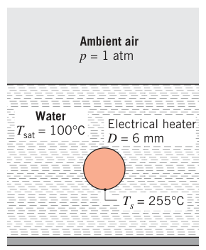
假设（Assumptions）：1. 稳态条件；2. 水处于标准大气压、温度均匀为 \(T_{sat}\)。
物性（Properties）：表 A.6，饱和水，液体（100°C）：\(\rho_l = 1/v_f = 957.9\ \mathrm{kg/m^3}\)，\(h_{fg} = 2257\ \mathrm{kJ/kg}\)。表 A.4，常压水蒸气（\(T_f \approx 450\ \mathrm{K}\)）：\(\rho_v = 0.4902\ \mathrm{kg/m^3}\)，\(c_{p,v} = 1.980\ \mathrm{kJ/(kg \cdot K)}\)，\(k_v = 0.0299\ \mathrm{W/(m \cdot K)}\)，\(\mu_v = 15.25 \times 10^{-6}\ \mathrm{N \cdot s/m^2}\)。
分析（Analysis）：过热度
对照图 10.4，这已是膜态池内沸腾：传热同时包含对流与辐射。单位长度圆柱面的传热速率由式 10.3 写成：
换热系数 \(h\) 由式 10.9 计算，其中对流、辐射分量分别来自式 10.8 与 10.11。
对流分量：先算修正潜热 \(h_{fg}' = 2257 \times 10^3\ \mathrm{J/kg} + 0.8 \times 1.98 \times 10^3\ \mathrm{J/(kg \cdot K)} \times 155^\circ\mathrm{C} = 2.50 \times 10^6\ \mathrm{J/kg}\)，再由式 10.8（改写为 \(h_{conv}\) 的显式）：
辐射分量（\(\varepsilon = 1\)，温度换算 \(T_s = 528\ \mathrm{K}\)、\(T_{sat} = 373\ \mathrm{K}\)）：
试差求解式 10.9：
得
于是单位长度功率：
点评（Comments）：本题 \(\bar{h}_{rad} < \bar{h}_{conv}\)，可用简化式 10.10 估算：\(\bar{h} = 238 + 0.75 \times 21.3 = 254.0\ \mathrm{W/(m^2 \cdot K)}\)——与精确解几乎一致。
10.4.5 影响池内沸腾的参数#
重力场。航天与旋转机械应用必须考虑重力对沸腾的影响——前面各式中都显含 \(g\)。Siegel 的低重力效应综述确认：式 10.6、10.7、10.8（最大、最小热流与膜态沸腾）中的 \(g^{1/4}\) 依赖在 \(g\) 低至 \(0.10\ \mathrm{m/s^2}\) 时仍然正确。但核态沸腾的热流几乎与重力无关——这与式 10.5 的 \(g^{1/2}\) 依赖相矛盾，实验证据站在"无关"一边。超重时现象类似；ONB 附近，重力会影响气泡诱发的对流。
液体过冷度。若池内液体维持低于饱和温度，称液体过冷（subcooled），过冷度 \(\Delta T_{sub} \equiv T_{sat} - T_l\)。自然对流区，热流大致按 \((T_s - T_l)^n\) 或 \((\Delta T_e + \Delta T_{sub})^n\) 增长，指数 \(5/4 \le n \le 4/3\) 随加热面几何而定。核态沸腾区，过冷度的影响一般认为可忽略；但最大、最小热流 \(q_{\max}''\)、\(q_{\min}''\) 随 \(\Delta T_{sub}\) 线性增大。膜态沸腾的热流随 \(\Delta T_{sub}\) 增大而强烈增大。
表面状况。表面粗糙度（机加工、开槽、划痕、喷砂）对最大、最小热流及膜态沸腾的影响可忽略；但对核态沸腾段，Berenson 证明粗糙度大幅提高热流——粗糙表面有大量凹坑截留蒸气（图 10.6），提供更多、更大的气泡生长位点，汽化核心密度远高于光滑表面。不过长时间沸腾后粗糙度效应逐渐减退：粗糙化造出的大位点不是稳定的蒸气截留源。
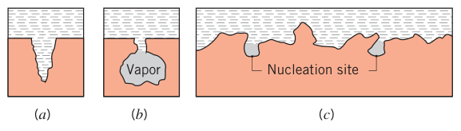
能稳定强化核态沸腾的商用表面有两类（图 10.7）：(1) 烧结、钎焊、火焰喷涂、电沉积或发泡制成的多孔涂层；(2) 机加工成形的双内凹腔（double-reentrant cavity）结构，保证蒸气持续截留。这类表面让汽化核心的蒸气持续更新，强化超过一个数量级。主动强化技术（表面擦拭–旋转、表面振动、流体振动、静电场等）也被综述过，但它们让系统复杂化、往往损害可靠性，实际应用很少。
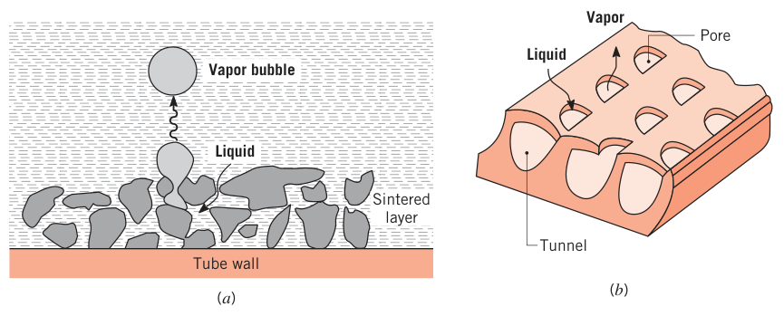
10.5 强迫对流沸腾#
池内沸腾的流动主要来自受热面上气泡的浮升运动；强迫对流沸腾（forced convection boiling）的流动则来自流体的定向（整体）运动，叠加浮升力效应。工况强烈依赖几何——外部流动（加热板、圆柱绕流）或内部（管道）流动。内部强迫对流沸腾常称两相流（two-phase flow），其特征是沿流向液–汽状态剧烈变化。
10.5.1 外部强迫对流沸腾#
加热平板的外部流动：沸腾起始前用标准强迫对流关联式估热流；板温升高后出现核态沸腾，热流增大。若蒸气生成不太多、液体过冷，Bergles 和 Rohsenow 建议把总热流分解为纯强迫对流与池内沸腾两个分量来估算。
强迫对流与过冷度都会提高核态沸腾的临界热流密度 \(q_{\max}''\)：实验值高达 \(35\ \mathrm{MW/m^2}\)（对照：1 atm 水池内沸腾仅 \(1.3\ \mathrm{MW/m^2}\)）。
对速度 \(V\) 的液体横掠直径 \(D\) 圆柱，Lienhard 和 Eichhorn 给出低速、高速两个表达式（物性按饱和温度取值）：
低速：
高速：
韦伯数（Weber number）\(We_D\) 是惯性力与表面张力之比：
高、低速区的判据：热流参数 \(q_{\max}''/(\rho_v h_{fg} V)\) 小于还是大于 \([(0.275/\pi)(\rho_l/\rho_v)^{1/2} + 1]\)。多数情况下式 10.12、10.13 与 \(q_{\max}''\) 数据的偏差在 20% 以内。
10.5.2 两相流#
内部强迫对流沸腾：液体流过加热管，气泡在内壁生成；气泡生长与脱离强烈受流速影响，流体力学效应与池内沸腾差别显著，并伴随多种两相流流型（flow regimes）。
看图 10.8：竖管受恒定表面热流，流体自下而上。入口过冷液体的传热先是单相强迫对流（第 8 章关联式）；往下管壁温度超过液体饱和温度，进入过冷流动沸腾区（subcooled flow boiling region）——径向温度梯度大，气泡贴壁生成、管心仍是过冷液体；再往下气泡区增厚，直到管心液体也达到饱和温度：气泡可存在于任意半径位置，流体的时均蒸气质量分数（干度，quality）\(X\) 在任意半径处都大于零——饱和流动沸腾区（saturated flow boiling region）开始。区内平均干度
不断增大，且因两相密度差巨大，流体平均速度 \(u_m\) 大幅上升。
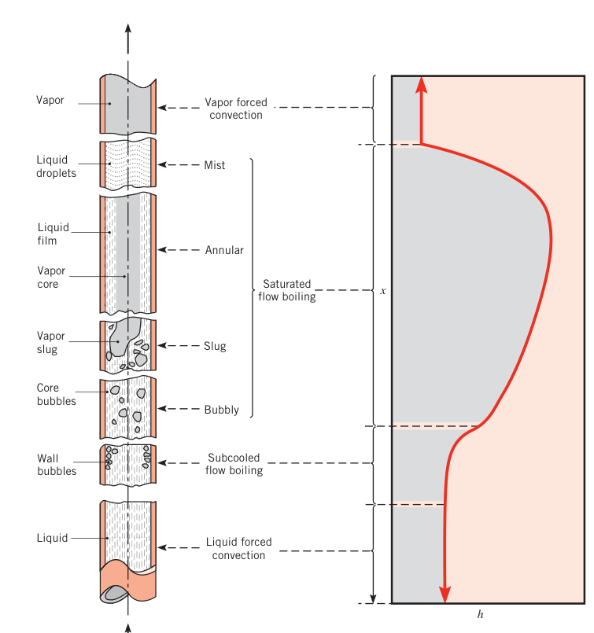
饱和流动沸腾区的第一阶段是泡状流（bubbly flow regime）：\(\bar X\) 继续增大，气泡合并成弹状流（slug flow regime）的蒸气弹，随后进入环状流（annular-flow regime）——液体贴壁成膜沿内壁流动，蒸气以更大速度冲过管心。环状流下游内壁出现干斑并在过渡区长大，最终整个内壁完全干涸，剩余液体全变成高速穿过管心的液滴——雾状流（mist regime）。液滴完全汽化后，流体是过热蒸气，进入第二个单相强迫对流区。从第一个到第二个单相区，蒸气份额的增大加上两相密度差，使平均流速提高几个数量级。
当地换热系数沿管长 \(x\) 剧烈变化（\(\bar X\) 与 \(u_m\) 均沿程增大）：过冷流动沸腾区内 \(h\) 可增大约一个数量级；饱和流动沸腾区早期继续升高；深入该区后，\(h\) 随 \(\bar X\) 的变化可升可降（取决于流体与管壁材料）。最小的换热系数一般出现在第二（蒸气）单相强迫对流区——蒸气的导热系数远低于液体。
原书笔误：X̄ 沿程是增大不是减小
原书此句印作 "\(\bar X\) and \(u_m\) decrease and increase, respectively"（X̄ 减小、\(u_m\) 增大）。X̄ 沿程只增不减：本节前文明言平均干度沿程增大，恒热流下的能量平衡式 10.16 也给出 \(\bar X \propto x\)。"decrease" 系笔误，读作 increase。
饱和流动沸腾区（光滑圆管）的关联式：
或
适用范围 \(0 < \bar X \le 0.8\)，两式取较大的 \(h\)。式中 \(\dot{m}'' = \dot{m}/A_c\) 是单位截面积质量流量；液相弗劳德数（Froude number）\(Fr = (\dot{m}''/\rho_l)^2/(gD)\)；系数 \(G_{s,f}\) 取决于表面–流体组合（表 10.2）。分层参数 \(f(Fr)\) 处理水平管中液、汽两相可能出现的分层：竖管以及 \(Fr \gtrsim 0.04\) 的水平管取 1；\(Fr \lesssim 0.04\) 的水平管取 \(f(Fr) = 2.63\, Fr^{0.3}\)。所有物性按 \(T_{sat}\) 取值。单相对流系数 \(h_{sp}\) 对应图 10.8 的液相强迫对流区，由式 8.62 计算（物性按 \(T_{sat}\)）；式 8.62 只适用于湍流，故液相单相对流为层流时不要使用式 10.15。式 10.15 还要求通道尺寸远大于气泡直径，即约束数 \(Co = \sqrt{\sigma/(g(\rho_l - \rho_v))}/D_h \lesssim 1/2\)。
表 10.2 不同流体（商用铜管）的 \(G_{s,f}\) 值
| 管内流体 | \(G_{s,f}\) |
|---|---|
| 煤油（kerosene） | 0.488 |
| 制冷剂 R-134a | 1.63 |
| 制冷剂 R-152a | 1.10 |
| 水 | 1.00 |
（不锈钢管一律取 \(G_{s,f} = 1\)。）
用式 10.15 前需知道平均干度 \(\bar X\)。忽略流体的动能、势能变化与功时，由式 1.12d 可整理出（\(x = 0\) 取在 \(\bar X\) 开始大于零处；焓变化 \(u_t + pv\) 等于 \(\bar X\) 的变化乘汽化潜热 \(h_{fg}\)）：
过冷流动沸腾区以及环状、雾状区的关联式可查文献。恒热流条件下，临界热流工况可能出现在过冷流动沸腾区、高干度的饱和流动沸腾区或蒸气强迫对流区，严重时导致管材熔化。流动沸腾的进一步讨论与覆盖宽工况、数以千计 CHF 实测值的数据库见文献。
10.5.3 微通道内的两相流#
两相微通道（two-phase microchannels）指水力直径 10～1000 μm 的圆形或非圆形管内的强迫对流沸腾，可达到极高的传热速率。此时气泡尺寸可占管径的相当份额，约束数可以很大（\(Co \gtrsim 1/2\)），出现气泡几乎占据整个管径的流型——换热系数 \(h\) 可随 \(x\) 冲到图 10.8 曲线之上的峰值，随后再像图中那样下降。式 10.15 对微通道流动沸腾连趋势都预测不对，必须求助于更精细的模型。
拓展：微通道为什么另搞一套
约束数 \(Co\) 衡量"气泡脱离直径与通道尺寸之比"。常规管道 \(Co \lesssim 1/2\)：气泡远小于管径，浮升力与惯性主导；微通道 \(Co \gtrsim 1/2\)：气泡与通道同量级，表面张力接管主导权，出现拉长的蒸气塞等新流型。凡是把常规管关联式外推到微通道，都要先问一句 \(Co\) 是否还在适用范围。
10.6 凝结：物理机制#
蒸气温度降到饱和温度以下时发生凝结（condensation）。工业设备中最常见的形式是蒸气与冷表面接触（图 10.9a、b）：蒸气释放潜热、把热传给表面、凝结液生成。另外两种常见模式：均相凝结（homogeneous condensation，图 10.9c）——蒸气在气相中凝成悬浮液滴形成雾；直接接触凝结（direct contact condensation，图 10.9d）——蒸气与冷液体直接接触。本章只讨论表面凝结。
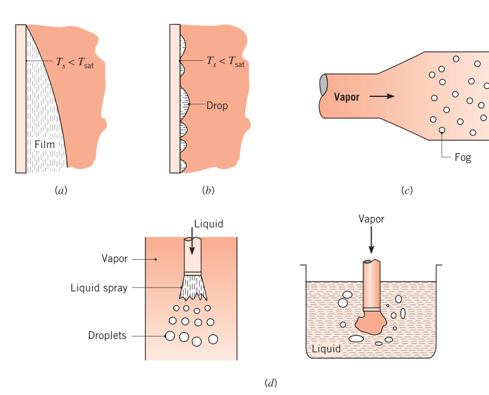
按表面状况，表面凝结分两种：
- 膜状凝结（film condensation）：液膜覆盖整个凝结表面，在重力作用下连续排走——干净、未污染表面的主导形式；
- 珠状凝结（dropwise condensation）：表面涂有抑制润湿的物质时可以维持——液滴在表面的裂纹、凹坑与空穴中生成，靠持续凝结长大、合并。典型情况下超过 90% 的表面被液滴覆盖，直径从几微米到肉眼可见的团块；液滴受重力作用从表面滚落。
图 10.10 是竖直铜面上水蒸气的两种凝结实景：左半表面涂了薄层油酸铜促进珠状凝结，1 mm 直径的热电偶探针横贯画面。
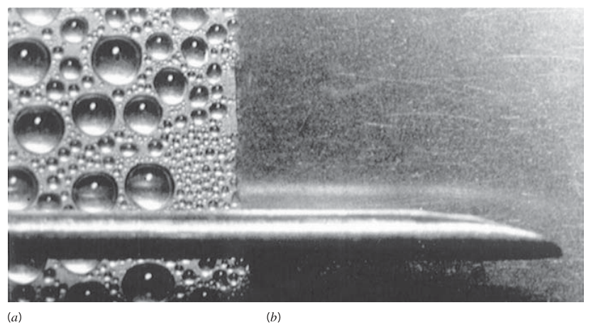
无论液膜还是液滴，凝结液都是蒸气与表面之间的热阻，且厚度沿流动方向增大、热阻随之增大——所以膜状凝结场合宜用短的竖直表面或水平圆柱。多数冷凝器因此做成水平管束：管内走液体冷却剂，管外环绕待凝蒸气。
维持高凝结与传热速率方面，液滴优于液膜：珠状凝结的大部分传热通过直径小于 100 μm 的液滴完成，传热速率可比膜状凝结高一个数量级以上。所以工程上常在表面涂抑制润湿的涂层来促进珠状凝结——硅酮（silicones）、特氟龙（Teflon）、各类蜡与脂肪酸。坏消息是这些涂层会因氧化、结垢或脱落逐渐失效，最终仍回到膜状凝结。加上珠状凝结的换热系数本就比膜状高，冷凝器设计计算通常按膜状凝结做保守假设——本章其余部分聚焦膜状凝结，珠状凝结只简述结果。
拓展：珠状凝结为什么高一个量级
膜状凝结的热量必须导热穿过整层液膜（水膜 0.2 mm 就相当于一层不小的热阻），而珠状凝结时大部分表面直接裸露在蒸气里，蒸气在裸露面上直接凝结放热，热量只需穿过微小液滴——传热路径短、热阻小。这也是 10.11 节珠状凝结关联式给出的 \(h\) 高达 \(10^5\ \mathrm{W/(m^2 \cdot K)}\) 量级的根本原因。
10.7 竖壁上的层流膜状凝结#
实际膜状凝结有若干复杂因素（图 10.11a）：液膜从板顶生成、在重力下下流；液膜厚度 \(\delta\) 与凝结液质量流量 \(\dot m\) 因液–汽界面（温度 \(T_{sat}\)）上持续凝结而沿 \(x\) 增大；热量从界面穿过液膜传给温度 \(T_s < T_{sat}\) 的表面。最一般情形下蒸气可能过热（\(T_{v,\infty} > T_{sat}\)），可能混有一种或多种不凝气体（noncondensable gases）；液–汽界面还存在有限剪切应力，使蒸气侧与液膜内都有速度梯度。
尽管如此，采用 Nusselt 提出的假定即可得到有用的结果。四条假定：
- 液膜为层流、物性为常数；
- 气体是纯蒸气、温度均匀且等于 \(T_{sat}\)——蒸气内无温度梯度，传给液–汽界面的热只能来自界面处的凝结，而不是来自蒸气的导热；
- 液–汽界面的剪切应力可忽略，即 \(\partial u/\partial y\,|_{y=\delta} = 0\)——于是无需考虑图 10.11a 中蒸气侧的速度、热边界层；
- 液膜内的平流（对流动量与能量输运）可忽略——液膜速度低，合理。于是穿越液膜的传热只靠导热，液膜内温度分布为线性。
假定下的膜内状况见图 10.11b。
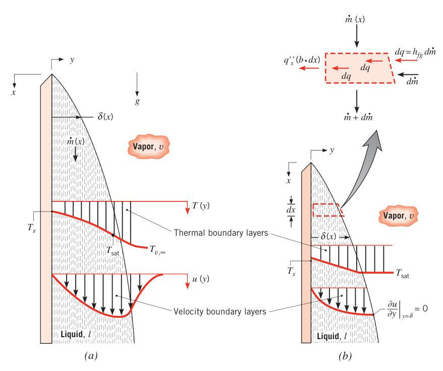
液膜的 \(x\) 动量方程可由式 9.1 得到（取 \(\rho = \rho_l\)、\(\mu = \mu_l\)；\(x\) 沿重力方向，重力项变号；压强梯度由式 9.2 取 \(d p_\infty/dx = -\rho_v g\)，因为自由流密度是蒸气密度）。由第 4 条假定略去动量平流项：
积分两次，代入边界条件 \(u(0) = 0\)（无滑移）与 \(\partial u/\partial y\,|_{y=\delta} = 0\)（界面无剪切），得液膜内速度分布：
单位宽度的凝结液质量流量 \(\Gamma(x)\) 由速度剖面积分：
代入式 10.18：
\(\delta\)（进而 \(\Gamma\)）随 \(x\) 的具体变化规律，由图 10.11b 微元上的能量守恒确定：单位宽度、长 \(dx\) 的界面微元上，流入液膜的热量速率 \(dq\) 必等于界面凝结释放能量的速率：
平流被忽略，故穿过界面的传热速率也等于传给壁面的速率：
液膜内温度线性分布，壁面热流密度用傅里叶定律：
联立式 10.19 与 10.21—10.23：
对式 10.20 微分：
联立式 10.24 与 10.25：
从 \(\delta = 0\)（\(x = 0\)）积分到位置 \(x\)：
Nusselt 与 Rohsenow 还改进了这一结果：计入热平流效应后，汽化潜热中应加一项，Rohsenow 建议采用修正潜热（modified latent heat）：
其中 \(Ja = c_{p,l}(T_{sat} - T_s)/h_{fg}\) 是雅各布数。Sadasivan 与 Lienhard 后来指出修正潜热还与液体普朗特数弱相关。
壁面热流密度写为
与式 10.23 对比得当地换热系数：
代入式 10.26（\(h_{fg}\) 换成 \(h_{fg}'\)）：
\(h_x \propto x^{-1/4}\)，所以全板平均换热系数为
即
平均努塞尔数：
物性取法：使用式 10.32 与式 10.27 时，所有液体物性按膜温 \(T_f = (T_{sat} + T_s)/2\) 取值；蒸气密度 \(\rho_v\) 与潜热 \(h_{fg}\) 按 \(T_{sat}\) 取值。
Sparrow 与 Gregg 对竖壁膜状凝结做了更精细的边界层分析（Chen 证实）：\(Ja \le 0.1\) 且 \(1 \le Pr \le 100\) 时式 10.32 的误差小于 3%。Dhir 与 Lienhard 证明式 10.32 也可用于倾斜平板——把 \(g\) 换成 \(g\cos\theta\)（\(\theta\) 为表面与竖直方向的夹角）；\(\theta\) 很大时慎用，\(\theta = \pi/2\)（水平板）时不适用。竖直圆管内外表面（半径 \(R\)）只要 \(R \gg \delta\) 就可用同一表达式。
对表面的总传热量用式 10.31 配牛顿冷却公式：
总凝结速率：
式 10.33、10.34 对任何表面几何都适用，只是 \(\bar h_L\) 的形式随几何与流动状态而变。
拓展：Nusselt 1916——四条假定各挡掉什么
假定 1（层流、常物性）把问题压进抛物型速度剖面的解析世界；假定 2（纯蒸气、等温 \(T_{sat}\)）砍掉了蒸气侧边界层——界面成了恒温边界；假定 3（界面无剪切）承认蒸气基本不动，液膜只被重力拉扯；假定 4（膜内无平流）让传热退化为纯导热、温度线性，\(h_x = k_l/\delta\) 一步写死。四刀下去，动量方程变成可积分两次的常微分方程，能量守恒变成一个关于 \(\delta(x)\) 的四阶多项式。一百年后它仍是凝结换热的骨架解，也是 10.4.4 节膜态沸腾公式的来源。
10.8 湍流膜状凝结#
与此前所有对流现象一样，凝结液膜内也会出现湍流。看图 10.12a 的竖直表面，转捩判据用液膜雷诺数表达：
凝结液质量流量 \(\dot m = \rho_l u_m b\,\delta\)（\(u_m\) 为膜内平均速度，\(\delta\) 为特征长度），于是
与单相边界层一样，\(Re_\delta\) 指示流动状态（图 10.12b）：\(Re_\delta \lesssim 30\) 时液膜层流、无波；\(Re_\delta\) 增大后液膜出现波纹，\(Re_\delta \approx 1800\) 时层流到湍流的转变完成。
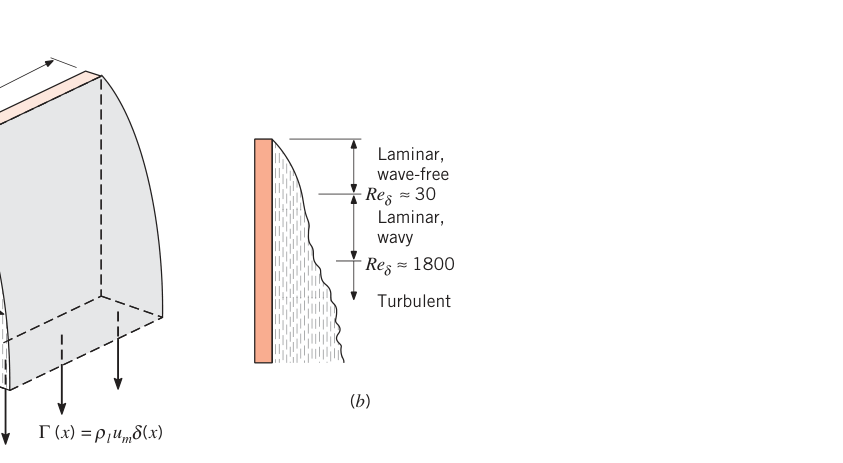
无波层流区（\(Re_\delta \lesssim 30\)）联立式 10.35 与 10.20 得
再取 \(\rho_l \gg \rho_v\)，联立式 10.26、10.31 与 10.37，得无波层流区凝结的平均修正努塞尔数：
其中 \(\bar h_L\) 对应整块板的凝结。板底流动处于波状层流区时，Kutateladze 推荐
板底已进入湍流区时，Labuntsov 推荐
三个关联式的图像见图 10.13；Gregorig 等对水在 \(1 < Re_\delta < 7200\) 范围内的实验证实了这些趋势。物性取法与层流膜状凝结相同（式 10.32 之下的说明）。
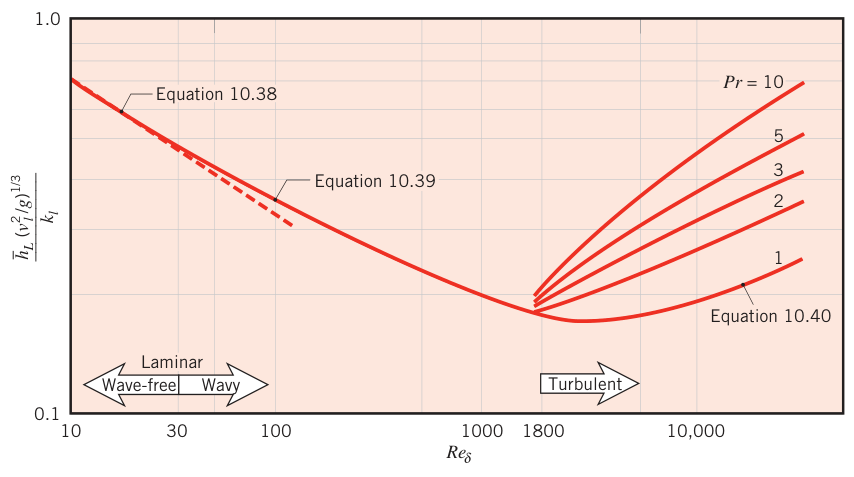
式 10.38—10.40 中的 \(Re_\delta\) 对应凝结表面底部 \(x = L\) 处的液膜厚度 \(\delta\)。\(\delta\) 未知时，更方便把方程改写成消去 \(Re_\delta\) 的形式：联立式 10.34、10.36 与平均努塞尔数定义，得
无量纲参数
把式 10.41 代入式 10.38、10.39、10.40，解出用 \(P\) 表达的平均努塞尔数：
（式 10.43 与取 \(\rho_l \gg \rho_v\) 的式 10.32 相同。）解题流程：先由式 10.42 算 \(P\)，再按所在区间选式 10.43、10.44 或 10.45 得 \(\overline{Nu}_L\) 与 \(\bar h_L\)。
【例 10.3】竖管外表面的蒸气凝结
已知（Known）：长 1 m、外径 80 mm 的竖管，外表面暴露于常压饱和蒸气，管内通冷却水把壁温维持在 50°C。
求（Find）：传给冷却水的传热速率，以及表面上的蒸气凝结速率。
示意图（Schematic）：
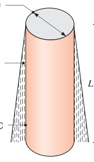
假设（Assumptions）：1. 液膜厚度相对圆柱直径很小；2. 蒸气中不凝气体浓度可忽略。
物性（Properties）：表 A.6，饱和蒸气（\(p = 1.0133\ \mathrm{bar}\)）：\(T_{sat} = 100^\circ\mathrm{C}\)，\(\rho_v = 1/v_g = 0.596\ \mathrm{kg/m^3}\)，\(h_{fg} = 2257\ \mathrm{kJ/kg}\)。表 A.6，饱和液体（\(T_f = 75^\circ\mathrm{C}\)）：\(\rho_l = 1/v_f = 975\ \mathrm{kg/m^3}\)，\(\mu_l = 375 \times 10^{-6}\ \mathrm{N \cdot s/m^2}\)，\(k_l = 0.668\ \mathrm{W/(m \cdot K)}\)，\(c_{p,l} = 4193\ \mathrm{J/(kg \cdot K)}\)，\(\nu_l = \mu_l/\rho_l = 385 \times 10^{-9}\ \mathrm{m^2/s}\)。
分析（Analysis）：液膜厚度远小于管径的假设成立时，可用 10.7、10.8 节的关联式。先算雅各布数与修正潜热：
由式 10.42：
落在 \(15.8 \lesssim P \lesssim 2530\) 区间，用式 10.44：
于是
由式 10.33、10.34：
点评（Comments）：
- 用式 10.26（配修正潜热）按无波层流假定反推管底液膜厚度：
\(\delta(L) \ll D/2 = 40\ \mathrm{mm}\)，对竖圆柱套用竖直平板关联式的做法得到确认。
-
加长管子可以提高凝结速率：\(1 \le L \le 2\ \mathrm{m}\) 的计算显示 \(1000 \lesssim Re_\delta \lesssim 2330\)（即 \(1500 \lesssim P \lesssim 3010\)）。注意在 \(P = 2530\)（\(L \approx 1.68\ \mathrm{m}\））附近两条关联式并不衔接：式 10.45 依赖 \(Pr\)，式 10.44 不依赖。
-
蒸气混入不凝气体（如空气）会大幅压低传热与凝结速率——多机制叠加的结果。蒸气中仅含 1% 质量份额的空气，\(q\) 与 \(\dot m\) 就可下降 65%。运行在亚大气压的蒸气冷凝器（如朗肯循环的凝汽器）必须精心设计以杜绝空气渗入。
10.9 径向系统上的膜状凝结#
10.7 节的 Nusselt 分析可推广到球面或水平管外表面的层流膜状凝结（图 10.14a、b），平均努塞尔数：
常数：球 \(C = 0.826\)，水平管 \(C = 0.729\)。本式与下述式 10.48、10.49 的物性取法均按式 10.32 之下的说明。
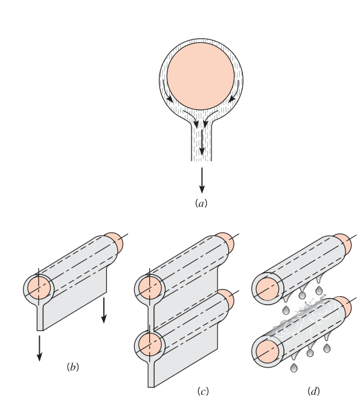
液–汽界面弯曲时（如图 10.14 的球、管），表面张力会在界面两侧建立压差，由 Young–Laplace 方程描述（二维系统）：
\(r_c\) 是液–汽界面的局部曲率半径。若 \(r_c\) 沿界面变化（蒸气压 \(p_v\) 恒定），液体一侧压强不均，会影响液内速度分布与传热速率。对图 10.14b 的光管，除底部液片脱离处外，界面曲率较小（\(r_c \gtrsim D/2\)），整个液–汽界面上 \(p_l \approx p_v\)——表面张力不影响凝结速率。
肋管上的凝结（图 10.15）是另一番景象：肋片的尖锐棱角使液–汽界面曲率剧烈变化，表面张力效应重要起来。肋管上，表面张力在肋尖附近减薄液膜、提高传热，却在肋间区域持留凝结液、降低传热；正如球底或光管底部的液层更厚，水平肋管下侧也持留更多凝结液。
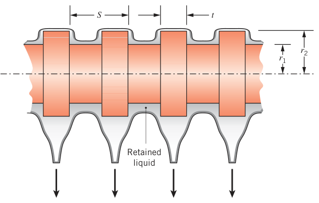
肋管传热速率 \(q_{ft}\) 与对应光管 \(q_{uft}\) 之比叫强化比（enhancement ratio）\(\varepsilon_{ft} = q_{ft}/q_{uft}\)。强化程度主要取决于流体、环境压强与肋几何，与管–环境温差弱相关。相对单相对流换热常用的肋片，这里的小肋造就强烈弯曲的液面，强化显著。小肋可以这样制造：从半径 \(r_2\) 的管子上切削出肋（图 10.15），消除管–肋接触热阻；若用铜等高导热金属制造，可认为管与肋温度均匀一致。
肋管的传热关联式往往繁琐、适用范围受限；设计时可用 Rose 推出的最小强化估算——最小强化出现在凝结液持满整个肋间区域时：
其中 \(S\) 为肋间距、\(t\) 为肋厚、\(r_1\) 与 \(r_2\) 分别为管半径与肋端半径；\(\rho_l\)、\(\rho_v\) 按式 10.32 之下的说明取值，\(\sigma\) 按 \(T_{sat}\) 取值。实际强化高于 \(\varepsilon_{ft,\min}\)——水的实测值在 \(2 \le \varepsilon_{ft} \le 4\)。非等温肋的传热估算方法见 Briggs 与 Rose。
竖直排列的管排（图 10.14c）：若凝结液连成连续液片，下方各管的液膜比顶管厚，传热速率随之下降。对竖直排列的 \(N\) 根水平光管，全排平均换热系数：
其中 \(\bar h_D\) 是顶管的换热系数（式 10.46）。把 Nusselt 分析推广到"管–管液膜增厚"可得 \(n = -1/4\)；但实验常发现 \(n = -1/6\) 更符合实际。
解析值与经验值的偏差有几方面来源：分析假定凝结液连成连续的绝热液片横跨各管（图 10.14c），而实际上传热给液片、液片自由下落时动量增大，都会抬高总传热速率——Chen 计入了这些影响，以 \(Ja\) 与管数 \(N\) 表达：\(Ja \lesssim 0.1\) 时传热强化小于 15%。实测值偏大也可能归因于凝结液滴落（图 10.14d）：液滴撞击下管时，湍动与波动传遍液膜，强化传热。对环肋管，肋片阻碍凝结液横向扩展，让下管更多表面直接暴露于蒸气，\(n\) 落在 \(-1/6 \le n \le 0\)。
光管的长径比超过 \(1.8\tan\theta\) 时，式 10.46、10.49 也可用于倾斜管——把 \(g\) 换成 \(g\cos\theta\)，\(\theta\) 自水平方向量起。无论肋管还是光管，不凝气体的存在都会使换热系数低于上述关联式的值。
【例 10.4】蒸汽冷凝器管束：光管与肋管
已知（Known）：某蒸汽冷凝器管束由 400 根管子排成方阵，管径 \(D = 2r_1 = 6\ \mathrm{mm}\)。1. 光管水平放置，暴露于 \(p = 0.15\ \mathrm{bar}\) 的饱和蒸气，管表面温度 \(T_s = 25^\circ\mathrm{C}\)。2. 加上环肋：肋高 \(h = r_2 - r_1 = 1\ \mathrm{mm}\)，肋厚 \(t = 1\ \mathrm{mm}\)，肋距 \(S = 2\ \mathrm{mm}\)。
求（Find）：1. 光管管束单位管长的凝结速率；2. 肋管的最小凝结速率（单位管长）。
示意图（Schematic）：
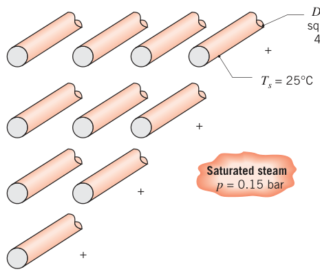
假设（Assumptions）：1. 圆柱与肋温度空间均匀；2. 平均换热系数沿管排按式 10.49 取 \(n = -1/6\)；3. 蒸气中不凝气体浓度可忽略。
物性（Properties）：表 A.6，饱和蒸气（\(p = 0.15\ \mathrm{bar}\)）：\(T_{sat} = 327\ \mathrm{K} = 54^\circ\mathrm{C}\)，\(\rho_v = 1/v_g = 0.098\ \mathrm{kg/m^3}\)，\(h_{fg} = 2373\ \mathrm{kJ/kg}\)，\(\sigma = 0.0671\ \mathrm{N/m}\)。表 A.6，饱和水（\(T_f = 312.5\ \mathrm{K}\)）：\(\rho_l = 1/v_f = 992\ \mathrm{kg/m^3}\)，\(\mu_l = 663 \times 10^{-6}\ \mathrm{N \cdot s/m^2}\)，\(k_l = 0.631\ \mathrm{W/(m \cdot K)}\)，\(c_{p,l} = 4178\ \mathrm{J/(kg \cdot K)}\)。
分析（Analysis）：
- 把式 10.46 整理成顶管（光管）换热系数：
水平管 \(C = 0.729\)，先算修正潜热：
于是
由式 10.49，全阵平均换热系数（\(N = 20\)）：
由式 10.34，单位管长的凝结速率：
- 由式 10.48，环肋带来的最小强化：
肋管的最小凝结速率：
点评（Comments）：式 10.49 中取了 \(n = -1/6\)；但肋管的 \(n\) 应介于 \(0\) 与 \(-1/6\) 之间。若取 \(n = 0\)（各管换热系数相同），凝结速率为 \(\dot m' = 1.43\ \mathrm{kg/(s \cdot m)}\)。上述结果是"凝结液持满全部肋间"的非优化工况；实际强化可达 \(\varepsilon_{ft,\max} \approx 4\)。取 \(\varepsilon_{ft,\max} = 4\)、\(n = 0\)：
即肋管可把凝结速率提高 \(100 \times (3.96 - 0.601)/0.601 = 560\%\)。
10.10 水平管内凝结#
制冷与空调系统的冷凝器普遍让蒸气在水平或竖直管内凝结。管内工况强烈依赖蒸气流速、沿程递减的蒸气质量分数 \(X\) 以及流体物性。
低速（图 10.16a）：上壁凝结的液体下流汇入底部液池，液池被蒸气流动的剪切力推向下游。低速判据：
（\(i\) 指管入口。）此时传热主要靠下落的凝结液膜，Dobson 与 Chato 建议用式 10.46、取 \(C = 0.555\)、\(h_{fg}' = h_{fg} + 0.375\, c_{p,l}\,(T_{sat} - T_s)\)。\(C\) 比管外凝结（0.729）小，因为液池那一侧的传热很差。物性取法按式 10.32 之下的说明。
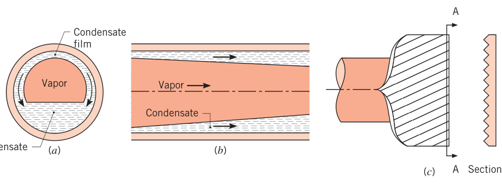
高速：两相流变湍流、呈环状（图 10.16b）——蒸气占据环心，环心直径随外层凝结液增厚而沿程收缩。Dobson 与 Chato 推荐当地换热系数的经验关联式：
其中 \(Re_{D,l} = 4\dot m (1 - X)/(\pi D \mu_l)\)，\(X = \dot m_v/\dot m\) 是蒸气质量分数，\(X_{tt}\) 是液、汽两相均为湍流的马蒂内利参数（Martinelli parameter）：
生成式 10.51 时所有物性按 \(T_{sat}\) 取值；推荐在单位管截面积质量流量超过 \(500\ \mathrm{kg/(s \cdot m^2)}\) 时使用。单相液相对流的极限情形（\(X \to 0\)、\(X_{tt} \to \infty\)、\(Re_{D,l} \to Re_D\)）下，式 10.51a 退化为 Dittus–Boelter 关联式（式 8.60，仅普朗特数指数不同）。
中等蒸气流速（或低蒸气质量分数）下的管内凝结流型复杂多样，各流型有各自的关联式，选用建议见 Dobson 与 Chato。细管内的凝结还受表面张力等效应影响。
加内微肋可以提高凝结速率：微肋管（microfin tube）通常为铜管，带高 0.1～0.25 mm 的三角形或梯形肋（图 10.16c）。传热强化来自铜表面积增大、肋结构诱发的湍流以及与 10.9 节肋管类似的表面张力效应。肋沿管长排成螺旋或人字形，传热速率可提高 50%～180%。
10.11 珠状凝结#
珠状凝结的换热系数通常比膜状凝结高一个数量级。事实上，在促进珠状凝结的换热器应用中，其他热阻（管壁、冷却剂侧）往往远大于凝结侧热阻——以致不需要珠状凝结的精确关联式。
已研究的表面–流体组合很多，数据大多是"促进珠状的铜表面"上的蒸汽凝结（即抑制润湿的表面），可整理为：
其中 \(\bar h_{dc}\) 的单位是 W/(m²·K)。传热速率与凝结速率用式 10.33、10.34 计算，\(h_{fg}'\) 用式 10.27，物性按式 10.32 之下的说明。过冷度 \(T_{sat} - T_s\) 对 \(\bar h_{dc}\) 的影响小，可忽略。
蒸气中不凝气体的影响非常重要（Shade 与 Mikic 专门研究过）。此外，若凝结表面材料的导热能力不如铜或银，表面自身的导热热阻会成为因素：所有热量都传给又小又散的液滴，表面材料内靠近活跃凝结区的热流线会拥挤，诱发收缩阻力（constriction resistance）（Hannemann 与 Mikic 研究过）。
拓展：不凝气体为什么是冷凝器的头号大敌
蒸气夹带空气时，空气分子随蒸气一起被输运到液膜表面却不凝结，逐渐在界面处积聚成一层气垫：蒸气必须先扩散穿过这层气膜才能到达液面，界面处的蒸气分压被压低、有效"饱和温度"下降，相当于给冷凝器多串了一层大热阻。例 10.3 点评给出的数字触目惊心：蒸气里 1% 质量的空气，\(q\) 与 \(\dot m\) 掉 65%。这就是电站凝汽器要抽真空、装检漏系统的原因。
10.12 小结#
本章给出沸腾与凝结过程的物理图像，以及适合工程近似计算的关联式。掌握与否可用下列问题自测：
原书章末自测问题（10.12 节复习用）
- 什么是池内沸腾？强迫对流沸腾？过冷沸腾？饱和沸腾？
- 过热度是怎么定义的？
- 画出沸腾曲线并标出关键区段与特征点。什么是临界热流密度？什么是莱顿弗罗斯特点？若控制表面热流，沿沸腾曲线如何行进？滞回效应的本质是什么？若控制表面温度，又如何行进？
- 核态沸腾区内热流密度与过热度是什么关系？
- 膜态沸腾包含哪些传热模式？
- 液体过冷度是怎么定义的？
- 重力场强弱、液体过冷度、表面粗糙度分别在多大程度上影响沸腾热流？
- 微通道内的两相流动与传热，和大管道内的有什么不同？
- 珠状凝结与膜状凝结有何不同？哪种凝结方式的传热速率更大？
- 对竖直表面上的层流膜状凝结，当地与平均换热系数随离开前缘的距离如何变化？
- 竖直表面膜状凝结的雷诺数怎么定义？对应的流动区段有哪些？
- 表面张力如何影响肋管外/管内的凝结？
坑与陷阱#
8 个容易踩的坑
- 功率控制下，过渡沸腾根本"停不住"：\(q_s''\) 一越过 CHF，\(\Delta T_e\) 从约 30°C 直接跳到 120°C 以上（图 10.4），这就是烧毁。凡按热流控制的设备（电加热器、反应堆燃料棒），设计准则永远是"热流对 CHF 留裕度"，而不是"壁温别超多少"。
- Rohsenow 式的 ±100% 误差是给 \(q_s''\) 的：反过来由 \(q_s''\) 求 \(\Delta T_e\)，因 \(\Delta T_e \propto (q_s'')^{1/3}\)，误差缩为三分之一。另外 \(C_{s,f}\) 对表面处理极敏感——水–铜抛光 0.0128、划痕 0.0068，选错值结果差近一倍。
- 物性取值温度各不相同，抄错是本章第一错因：Rohsenow 式全部按 \(T_{sat}\)；膜态沸腾的蒸气物性按膜温 \(T_f = (T_s + T_{sat})/2\)、\(\rho_l\) 与 \(h_{fg}\) 按 \(T_{sat}\)；凝结式的 \(k_l, \mu_l\) 按膜温、\(\rho_v\) 与 \(h_{fg}\) 按 \(T_{sat}\)。
- 修正潜热别忘加：膜态沸腾 \(h_{fg}' = h_{fg} + 0.80\, c_{p,v}\,\Delta T_e\)；膜状凝结 \(h_{fg}' = h_{fg}\,(1 + 0.68\, Ja)\)；水平管内低速凝结又是 \(+0.375\, c_{p,l}\,\Delta T_e\)。例 10.3 里 2400 对 2257 kJ/kg，差 6%——不是小数。
- CHF 公式的前导常数有两个值：大水平平板用 \(C = 0.149\)，大圆柱、球与其他大有限面用 \(C = \pi/24 \approx 0.131\)；加热面太小（\(Co > 0.2\)）时还要再乘小尺寸修正因子。
- 平均换热系数是当地值的 4/3 倍：竖壁凝结 \(h_x \propto x^{-1/4}\)，\(\bar h_L = \frac{4}{3} h_{x,L}\)（系数 0.943 已含此换算）。把当地系数直接当平均用，会低估 25%。
- 管束别套用 \(n = -1/4\)：解析值 \(n = -1/4\) 建立在"连续绝热液片"的假想图景上，经验值 \(n = -1/6\) 才符合实测；肋管更是 \(n\) 介于 0 与 \(-1/6\) 之间。例 10.4 的 560% 强化正是把 \(n\)、\(\varepsilon_{ft}\) 组合算对的结果。
- 辐射与膜态沸腾不能简单相加：辐射使蒸膜变厚，严格算法是解式 10.9 的 \(h^{4/3} = h_{conv}^{4/3} + h_{rad} h^{1/3}\)；只有 \(h_{rad} < h_{conv}\) 时才允许 \(h = h_{conv} + 0.75 h_{rad}\)。\(T_s \lesssim 300^\circ\mathrm{C}\) 时辐射可忽略。
速览#
- 速率方程 \(q_s'' = h\,\Delta T_e\)，过热度 \(\Delta T_e = T_s - T_{sat}\)（式 10.3）；沸腾凝结的 \(h\) 高达 \(10^4\)～\(10^5\ \mathrm{W/(m^2 \cdot K)}\)，根源是潜热搬运 + 气泡/液膜动力学。
- 无量纲参数：\(Ja = c_p \Delta T/h_{fg}\)（显热/潜热，通常很小）、\(Bo = g(\rho_l - \rho_v)L^2/\sigma\)（浮升力/表面张力）、类 \(Gr\) 参数（式 10.2a、b）。
- 沸腾曲线（水，1 atm）：自然对流 \(\Delta T_e \lesssim 5^\circ\mathrm{C}\) → 核态 \(5 \sim 30^\circ\mathrm{C}\)（\(q_s'' \propto \Delta T_e^3\)）→ 过渡 \(30 \sim 120^\circ\mathrm{C}\)（\(q''\) 下降）→ 膜态 \(\gtrsim 120^\circ\mathrm{C}\)（\(q''\) 回升）；C 点 CHF \(> 1\ \mathrm{MW/m^2}\)，D 点莱顿弗罗斯特点。
- 功率控制有滞回：加热沿曲线到 CHF 后跳烧毁；降温沿曲线到 \(q_{\min}''\) 后跳回核态；过渡段只有温度控制才能经过。
- Rohsenow 核态沸腾式（10.5）：\(q_s'' = \mu_l h_{fg}[g(\rho_l - \rho_v)/\sigma]^{1/2}[c_{p,l}\Delta T_e/(C_{s,f} h_{fg} Pr_l^n)]^3\)，\(C_{s,f}, n\) 查表 10.1，物性全按 \(T_{sat}\)。
- Zuber CHF（10.6）：\(q_{\max}'' = C h_{fg}\rho_v[\sigma g(\rho_l - \rho_v)/\rho_v^2]^{1/4}\)，\(C = 0.149\)（大平壁）或 0.131（其他）；水 1 atm 约 1.26 MW/m²；最小热流（10.7）\(C = 0.09\)。
- 膜态沸腾（10.8）：\(\overline{Nu}_D = C[g(\rho_l - \rho_v)h_{fg}'D^3/(\nu_v k_v \Delta T_e)]^{1/4}\)，\(C = 0.62\)（圆柱）/0.67（球），\(h_{fg}' = h_{fg} + 0.80\, c_{p,v}\Delta T_e\)；辐射用式 10.9—10.11 耦合。
- 管内流动沸腾流型：液相对流 → 过冷流动沸腾 → 饱和流动沸腾（泡状 → 弹状 → 环状 → 雾状）→ 汽相对流；Kandlikar 式 10.15 两式取大，\(\bar X\) 由式 10.16，干度适用 \(0 < \bar X \le 0.8\)、\(Co \lesssim 1/2\)。
- Nusselt 竖壁膜状凝结：\(\delta \propto x^{1/4}\)、\(h_x = k_l/\delta \propto x^{-1/4}\)、\(\bar h_L = 0.943[\rho_l g(\rho_l - \rho_v) k_l^3 h_{fg}'/(\mu_l \Delta T L)]^{1/4}\)（式 10.31、10.32），\(h_{fg}' = h_{fg}(1 + 0.68 Ja)\)。
- 液膜雷诺数 \(Re_\delta = 4\Gamma/\mu_l\)：\(\lesssim 30\) 无波层流（\(\overline{Nu}_L = 1.47 Re_\delta^{-1/3}\)）、\(30 \sim 1800\) 波状层流、\(\gtrsim 1800\) 湍流；\(\delta\) 未知时用参数 \(P\)（式 10.42—10.45）。水平管 \(C = 0.729\)，管束 \(\bar h_{D,N} = \bar h_D N^{-1/6}\)，肋管最小强化按式 10.48；珠状凝结高一个量级（式 10.52、10.53）。
术语速查#
| 英文 | 中文 | 一句话 |
|---|---|---|
| boiling / condensation | 沸腾 / 凝结 | 固–液界面的蒸发与蒸气变液体的相变对流 |
| excess temperature | 过热度 | \(\Delta T_e = T_s - T_{sat}\)，沸腾的驱动势 |
| pool boiling | 池内沸腾（大容器沸腾） | 液体大体积静止，运动仅由自然对流与气泡搅拌引起 |
| forced convection boiling | 强迫对流沸腾 | 外部驱动流动叠加气泡效应的沸腾 |
| subcooled / saturated boiling | 过冷沸腾 / 饱和沸腾 | 主体液温低于/略超饱和温度的沸腾分类 |
| nucleate boiling | 核态沸腾 | 气泡在汽化核心生成脱离的区段，\(q'' \propto \Delta T_e^3\) |
| transition boiling | 过渡沸腾 | 液膜与蒸膜交替振荡、\(q''\) 随 \(\Delta T_e\) 下降的区段 |
| film boiling | 膜态沸腾 | 稳定蒸膜覆盖表面，导热与辐射穿膜传热 |
| onset of nucleate boiling (ONB) | 核态沸腾起始点 | 沸腾曲线上气泡开始萌发的 A 点（约 5°C） |
| critical heat flux (CHF) | 临界热流密度 | 沸腾曲线峰值 \(q_{\max}''\)，越过即烧毁 |
| Leidenfrost point | 莱顿弗罗斯特点 | 沸腾曲线最低点 \(q_{\min}''\)，稳定蒸膜形成 |
| burnout / boiling crisis | 烧毁 / 沸腾危机 | 功率控制越过 CHF 后壁温飞升失效 |
| nucleation site | 汽化核心（成核位点） | 表面凹坑截留蒸气、气泡生长的位置 |
| contact angle | 接触角 | 液–汽–固三相交线处的夹角，影响气泡脱离与 \(C_{s,f}\) |
| Rohsenow correlation | Rohsenow 关联式 | 第一个核态沸腾关联式（式 10.5），误差可达 ±100% |
| Jakob number | 雅各布数 | \(Ja = c_p \Delta T / h_{fg}\)，显热与潜热之比 |
| Bond number | 邦德数 | \(Bo = g(\rho_l - \rho_v)L^2/\sigma\)，浮升力与表面张力之比 |
| confinement number | 约束数 | \(Co = Bo^{-1/2}\)，气泡尺寸与通道尺寸之比，\(> 0.2\) 需修正 |
| two-phase flow | 两相流 | 管内汽液共存的流动，流型沿程剧烈变化 |
| quality | 干度 | 两相流中蒸气质量分数 \(X\) |
| bubbly / slug / annular / mist flow | 泡状 / 弹状 / 环状 / 雾状流 | 饱和流动沸腾区随干度增大依次出现的流型 |
| film condensation | 膜状凝结 | 连续液膜覆盖表面，冷凝器设计的保守假设 |
| dropwise condensation | 珠状凝结 | 液滴覆盖 >90% 表面，传热比膜状高一个量级 |
| film Reynolds number | 液膜雷诺数 | \(Re_\delta = 4\Gamma/\mu_l\)，划分无波层流/波状/湍流 |
| Martinelli parameter | 马蒂内利参数 | \(X_{tt}\)，管内两相湍流的液汽阻力比参数 |
| noncondensable gas | 不凝气体 | 蒸气中的空气等，界面气垫可使 \(q\) 大跌（1% 空气 → −65%） |
| modified latent heat | 修正汽化潜热 | \(h_{fg}'\)，计入膜内显热的潜热修正 |
| microfin tube | 微肋管 | 内壁 0.1～0.25 mm 小肋铜管，凝结强化 50%～180% |